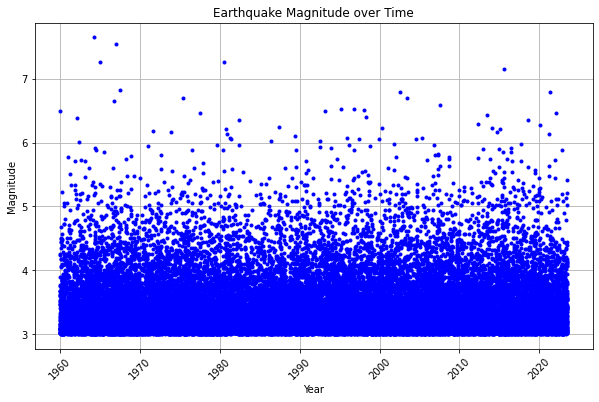
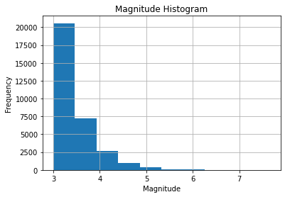
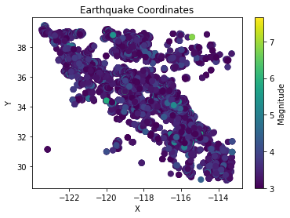

# Import Libraries
import pandas as pd
import matplotlib.pyplot as plt
# Specify the CSV file path
csv_file = 'Formatted_ETAS_Output.csv'
# Read the CSV file using Pandas
df = pd.read_csv(csv_file)
# Access the data in the DataFrame
print(df.head())
Date Time Year X Y Magnitude Z
0 12/31/59 0:03:09.00 1960.002196 -119.0502 33.9790 6.50 8.2474
1 1/2/60 0:08:49.00 1960.006125 -115.6222 33.0793 4.25 7.9322
2 1/2/60 0:10:31.00 1960.007305 -115.6323 33.1220 3.03 8.4015
3 1/2/60 0:10:32.00 1960.007320 -115.5851 33.0745 3.03 7.9678
4 1/2/60 0:11:07.00 1960.007720 -115.6256 33.0290 3.08 7.9737
summary_stats = df.describe(include="all")
print(summary_stats)
Date Time Year X Y \
count 32001 32001 32001.000000 32001.00000 32001.000000
unique 19127 26803 NaN NaN NaN
top 4/26/64 0:31:11.00 NaN NaN NaN
freq 10 5 NaN NaN NaN
mean NaN NaN 1991.924790 -117.54676 34.810868
std NaN NaN 18.407271 2.11036 2.388448
min NaN NaN 1960.002196 -123.48700 29.080400
25% NaN NaN 1975.851679 -118.73330 33.343000
50% NaN NaN 1992.311728 -117.20600 34.587100
75% NaN NaN 2007.784510 -116.10520 36.820000
max NaN NaN 2023.487118 -113.24630 39.475100
Magnitude Z
count 32001.000000 32001.000000
unique NaN NaN
top NaN NaN
freq NaN NaN
mean 3.452693 9.615045
std 0.460765 6.170866
min 3.000000 0.000000
25% 3.130000 4.236500
50% 3.310000 9.076000
75% 3.630000 15.139700
max 7.650000 20.000000
plt.figure(figsize=(10, 6))
plt.plot(df['Year'], df['Magnitude'], 'b.')
plt.xlabel('Year')
plt.ylabel('Magnitude')
plt.title('Earthquake Magnitude over Time')
plt.xticks(rotation=45)
plt.grid(True)
plt.show(block=True)
plt.hist(df['Magnitude'], bins=10)
plt.title('Magnitude Histogram')
plt.xlabel('Magnitude')
plt.ylabel('Frequency')
plt.grid(True)
plt.show()
plt.scatter(df['X'], df['Y'], c=df['Magnitude'], cmap='viridis', s=50) # Adjust the size (s) of the points as per your preference
plt.title('Earthquake Coordinates')
plt.xlabel('X')
plt.ylabel('Y')
cbar = plt.colorbar()
cbar.set_label('Magnitude')
plt.show()



new_df = df.copy()
# Convert "Date" column to datetime in the new DataFrame
new_df["Date"] = pd.to_datetime(new_df["Date"], errors="coerce", format="%m/%d/%y")
# Adjust two-digit year values to four-digit format in the new DataFrame
new_df.loc[new_df["Date"].dt.year > pd.Timestamp.now().year, "Date"] -= pd.DateOffset(years=100)
# Extract components from the "Date" column in the new DataFrame
new_df["Day"] = new_df["Date"].dt.day
new_df["Month"] = new_df["Date"].dt.month
new_df["Year"] = new_df["Date"].dt.year
new_df["DayOfWeek"] = new_df["Date"].dt.dayofweek
new_df["Quarter"] = new_df["Date"].dt.quarter
# Convert "Time" column to datetime in the new DataFrame
new_df["Time"] = pd.to_datetime(new_df["Time"], format="%H:%M:%S.%f")
# Extract time components in the new DataFrame
new_df["Hour"] = new_df["Time"].dt.hour
new_df["Minute"] = new_df["Time"].dt.minute
new_df["Second"] = new_df["Time"].dt.second
new_df["Millisecond"] = new_df["Time"].dt.microsecond // 1000
# Drop the original "Time" column from the new DataFrame
new_df = new_df.drop("Time", axis=1)
# Drop the "Date" column from the new DataFrame
new_df = new_df.drop("Date", axis=1)
new_df.head()
| Year | X | Y | Magnitude | Z | Day | Month | DayOfWeek | Quarter | Hour | Minute | Second | Millisecond | |
|---|---|---|---|---|---|---|---|---|---|---|---|---|---|
| 0 | 1959 | -119.0502 | 33.9790 | 6.50 | 8.2474 | 31 | 12 | 3 | 4 | 0 | 3 | 9 | 0 |
| 1 | 1960 | -115.6222 | 33.0793 | 4.25 | 7.9322 | 2 | 1 | 5 | 1 | 0 | 8 | 49 | 0 |
| 2 | 1960 | -115.6323 | 33.1220 | 3.03 | 8.4015 | 2 | 1 | 5 | 1 | 0 | 10 | 31 | 0 |
| 3 | 1960 | -115.5851 | 33.0745 | 3.03 | 7.9678 | 2 | 1 | 5 | 1 | 0 | 10 | 32 | 0 |
| 4 | 1960 | -115.6256 | 33.0290 | 3.08 | 7.9737 | 2 | 1 | 5 | 1 | 0 | 11 | 7 | 0 |
from sklearn.preprocessing import OrdinalEncoder
thresholds = [0, 4, 5, 6, 7, 8, float('inf')]
labels = ["Minor", "Light", "Moderate", "Strong", "Major", "Great"]
new_df["Strength"] = pd.cut(new_df["Magnitude"], bins=thresholds, labels=labels, right=False)
# Extract the "category" column as a 2D array
Strength = new_df[["Strength"]].values
# Create an instance of the OrdinalEncoder
encoder = OrdinalEncoder()
# Fit and transform the categories
Encoded_Strength = encoder.fit_transform(Strength)
# Add the encoded categories to the DataFrame
new_df["Encoded_Strength"] = Encoded_Strength
print(new_df)
Year X Y Magnitude Z Day Month DayOfWeek \
0 1959 -119.0502 33.9790 6.50 8.2474 31 12 3
1 1960 -115.6222 33.0793 4.25 7.9322 2 1 5
2 1960 -115.6323 33.1220 3.03 8.4015 2 1 5
3 1960 -115.5851 33.0745 3.03 7.9678 2 1 5
4 1960 -115.6256 33.0290 3.08 7.9737 2 1 5
... ... ... ... ... ... ... ... ...
31996 2023 -116.5198 34.4758 3.55 18.5553 24 6 5
31997 2023 -120.5137 35.9443 3.20 18.9807 24 6 5
31998 2023 -114.1410 30.0220 3.43 18.6407 24 6 5
31999 2023 -116.3940 34.1200 5.21 18.2065 26 6 0
32000 2023 -122.7768 38.7895 3.57 17.1314 26 6 0
Quarter Hour Minute Second Millisecond Strength Encoded_Strength
0 4 0 3 9 0 Strong 4.0
1 1 0 8 49 0 Light 0.0
2 1 0 10 31 0 Minor 2.0
3 1 0 10 32 0 Minor 2.0
4 1 0 11 7 0 Minor 2.0
... ... ... ... ... ... ... ...
31996 2 11 31 22 0 Minor 2.0
31997 2 11 32 21 0 Minor 2.0
31998 2 11 33 56 0 Minor 2.0
31999 2 11 39 36 0 Moderate 3.0
32000 2 11 41 26 0 Minor 2.0
[32001 rows x 15 columns]
new_df["Magnitude"] = new_df["Magnitude"] * 100
new_df.head()
| Year | X | Y | Magnitude | Z | Day | Month | DayOfWeek | Quarter | Hour | Minute | Second | Millisecond | Strength | Encoded_Strength | |
|---|---|---|---|---|---|---|---|---|---|---|---|---|---|---|---|
| 0 | 1959 | -119.0502 | 33.9790 | 650.0 | 8.2474 | 31 | 12 | 3 | 4 | 0 | 3 | 9 | 0 | Strong | 4.0 |
| 1 | 1960 | -115.6222 | 33.0793 | 425.0 | 7.9322 | 2 | 1 | 5 | 1 | 0 | 8 | 49 | 0 | Light | 0.0 |
| 2 | 1960 | -115.6323 | 33.1220 | 303.0 | 8.4015 | 2 | 1 | 5 | 1 | 0 | 10 | 31 | 0 | Minor | 2.0 |
| 3 | 1960 | -115.5851 | 33.0745 | 303.0 | 7.9678 | 2 | 1 | 5 | 1 | 0 | 10 | 32 | 0 | Minor | 2.0 |
| 4 | 1960 | -115.6256 | 33.0290 | 308.0 | 7.9737 | 2 | 1 | 5 | 1 | 0 | 11 | 7 | 0 | Minor | 2.0 |
encoded_strength_range = new_df["Encoded_Strength"].describe()[["min", "max"]]
print(encoded_strength_range)
min 0.0
max 4.0
Name: Encoded_Strength, dtype: float64
summary_stats = new_df.describe(include="all")
print(summary_stats)
Year X Y Magnitude Z \
count 32001.000000 32001.00000 32001.000000 32001.000000 32001.000000
unique NaN NaN NaN NaN NaN
top NaN NaN NaN NaN NaN
freq NaN NaN NaN NaN NaN
mean 1991.422987 -117.54676 34.810868 345.269335 9.615045
std 18.406353 2.11036 2.388448 46.076527 6.170866
min 1959.000000 -123.48700 29.080400 300.000000 0.000000
25% 1975.000000 -118.73330 33.343000 313.000000 4.236500
50% 1992.000000 -117.20600 34.587100 331.000000 9.076000
75% 2007.000000 -116.10520 36.820000 363.000000 15.139700
max 2023.000000 -113.24630 39.475100 765.000000 20.000000
Day Month DayOfWeek Quarter Hour \
count 32001.000000 32001.000000 32001.000000 32001.000000 32001.000000
unique NaN NaN NaN NaN NaN
top NaN NaN NaN NaN NaN
freq NaN NaN NaN NaN NaN
mean 15.722540 6.512046 3.010437 2.505640 11.475141
std 8.783883 3.437430 1.991078 1.111548 6.900558
min 1.000000 1.000000 0.000000 1.000000 0.000000
25% 8.000000 4.000000 1.000000 2.000000 6.000000
50% 16.000000 7.000000 3.000000 3.000000 11.000000
75% 23.000000 9.000000 5.000000 3.000000 17.000000
max 31.000000 12.000000 6.000000 4.000000 23.000000
Minute Second Millisecond Strength Encoded_Strength
count 32001.000000 32001.000000 32001.0 32001 32001.000000
unique NaN NaN NaN 5 NaN
top NaN NaN NaN Minor NaN
freq NaN NaN NaN 28384 NaN
mean 29.450048 29.354583 0.0 NaN 1.815818
std 17.348968 17.252479 0.0 NaN 0.617465
min 0.000000 0.000000 0.0 NaN 0.000000
25% 14.000000 14.000000 0.0 NaN 2.000000
50% 30.000000 29.000000 0.0 NaN 2.000000
75% 44.000000 44.000000 0.0 NaN 2.000000
max 59.000000 59.000000 0.0 NaN 4.000000
from sklearn.model_selection import train_test_split
X = new_df.drop("Magnitude", axis=1) # Features
y = new_df["Magnitude"] # Target variable
# Split the data into training and testing sets
X_train, X_test, y_train, y_test = train_test_split(X, y, test_size=0.3, random_state=42)
import xgboost as xgb
# Convert the training data to DMatrix format
dtrain = xgb.DMatrix(X_train, label=y_train)
# Set the parameters for the XGBoost model
params = {
'objective': 'reg:squarederror',
'n_estimators': 500,
'max_depth': 4,
'min_child_weight': 10,
'learning_rate': 0.05,
'subsample': 0.5,
'colsample_bytree': 0.8,
'verbosity': 2
}
# Create the XGBoost regressor
xgbr = xgb.XGBRegressor(**params)
# Train the XGBoost model
xgbr.fit(X_train, y_train)
# Print the model summary
print(xgbr)
---------------------------------------------------------------------------
ModuleNotFoundError Traceback (most recent call last)
Input In [11], in <cell line: 1>()
----> 1 import xgboost as xgb
3 # Convert the training data to DMatrix format
4 dtrain = xgb.DMatrix(X_train, label=y_train)
ModuleNotFoundError: No module named 'xgboost'